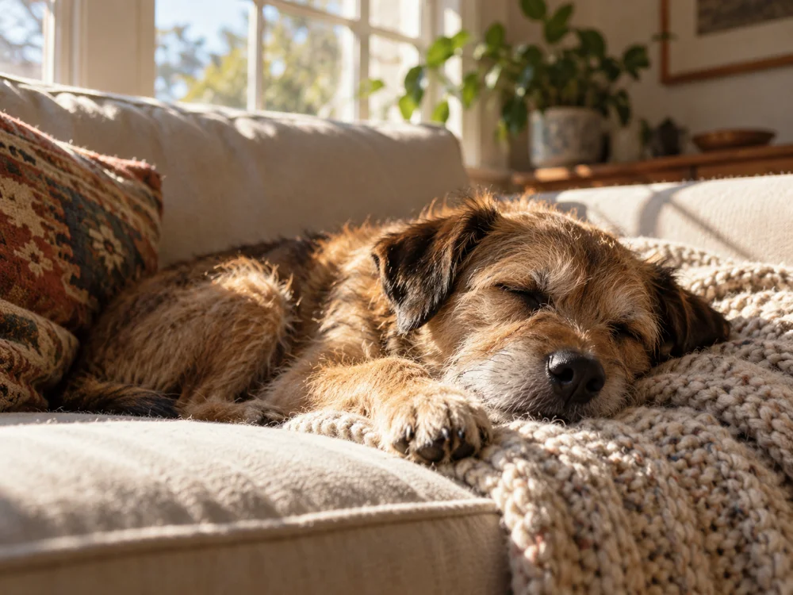
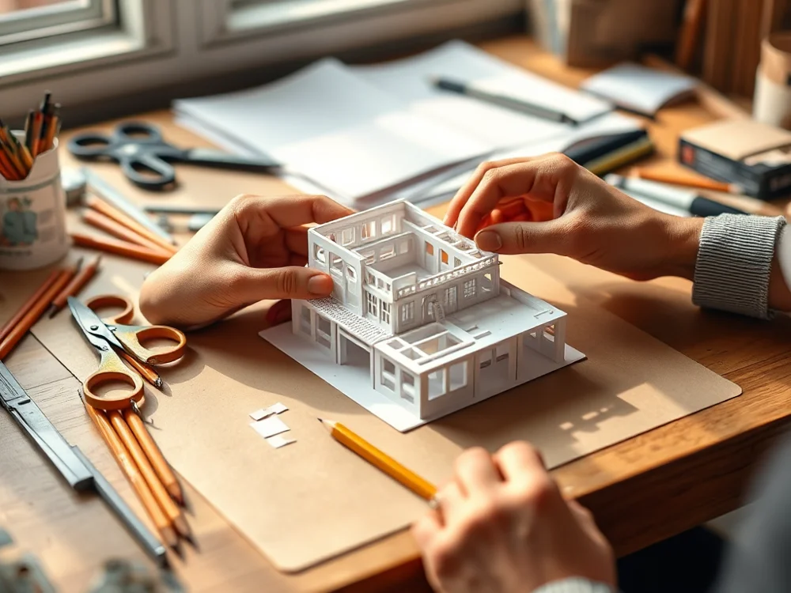
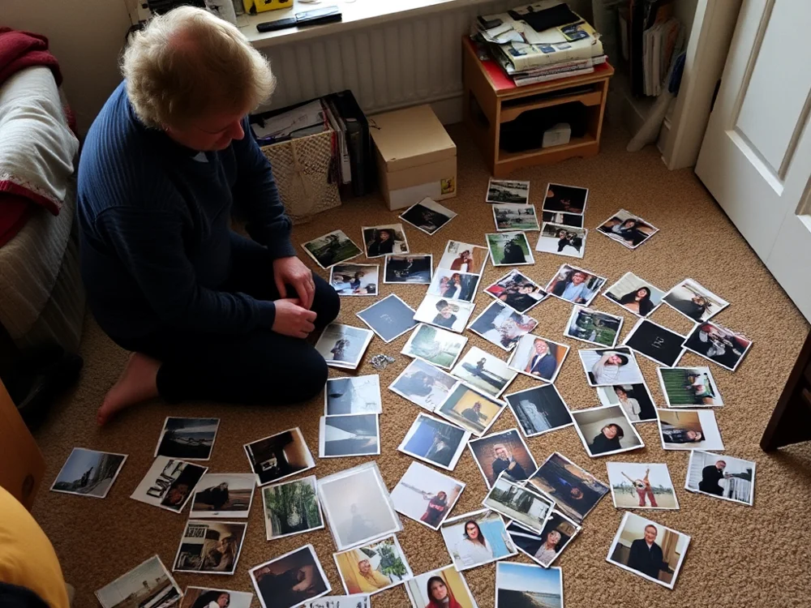

Framework
Our idea
Every decision starts with the people who use what we make


Strategy
One shared library keeps hundreds of makers moving in the same direction.
Photographs, drafts, cuts and notes all live side by side, so the brand is something people open every day, not something that sits in a PDF.
hero-still.raw
lunch-run_v3.mov
market-day.jpg
model-study.psd
kiln-notes.pdf

corner-light.jpg
roof-edit_final.mp4
In practice
The same framework flexes across every surface.
Keep scrolling past the end to open the menu.